Introduction
Step-by-step on how the app works.
The app are divided into two separate section:
1) Asset Creation and its functionality menus
2) Condition Report and its functionality menus
Asset Creation and Menus can be access from a large screen such as on a desktop,
while the Condition Report and Menus can be access from a small screen such as on a mobile phone.
Asset Creation and Menus (large screen)
This mode will allow you to create a new asset by clicking anywhere on the map.
When you click on the map a pop up Asset Creation Form will appear.
Enter the required details and click submit. You are now created an Asset!
Menus in this mode includes (left sidebar):
1) Help Menu : which will redirect you to this page
2) List of Assets in Best Condition (Table)
3) Daily Reporting Rates for all Users (Stacked Bar Graph)
Below are in details how to create an asset with its example screenshots.
Step 1: Click on Map
When you click anywhere on the map an Asset Creation Form would appear as shown in figure below. The Asset Cration Form would already contain the Longitude and Latitude of whenever you click on the map in the form. In the Asset Creation Form there are two field to be fill. Asset Name name Installation Date
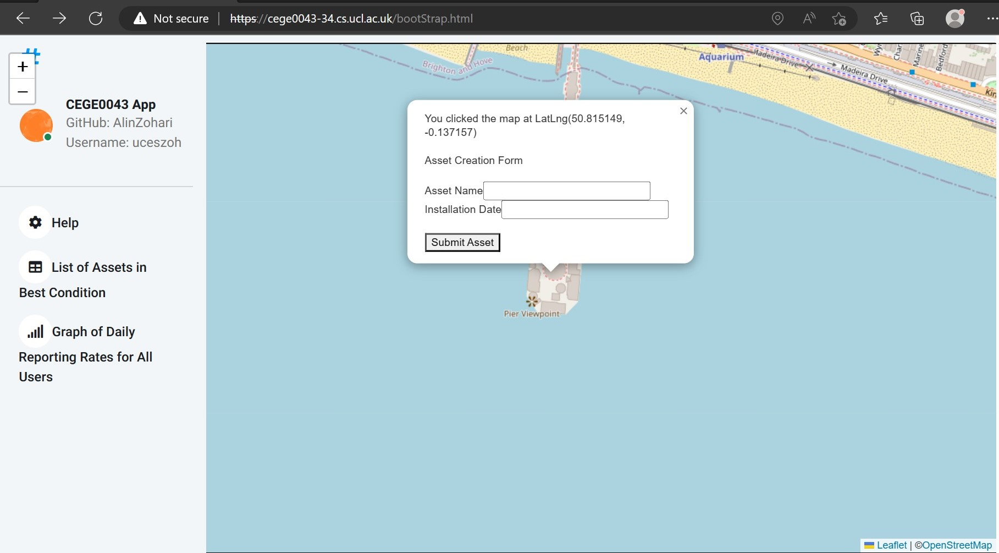On the screenshot above on the left side of the screen you can see the three Menus which would appear in this mode (large screen)
Step 2: Fill in the Form
Fill in the required fill in the form. Enter the Asset Name and the Installation Date (YYYY-MM-DD) field. You must enter both
of this field, if not an alert would pop up saying the field cannot be blank.
An 'Unique Error' alert will come out if the asset name you enter is the same with the one that already existed in the database. You can now submit this newly created
asset to the database by clicking the 'Submit Asset' button. A 'Thank you' alert will appear when the data are succefully in the database
Menus and Its Function (large screen)
Table - List of Assets in Best Condition
This menu show the list of all the assets that have at least one report at any point in time that are or were in the best condition. This Menu have a Close button on the top right to close the table.

Stacked Graph - Daily Reporting Rates Graph of All Users
This menu shows bar graph of daily reporting rates for the past week which includes how many reports have been submitted and how many reports have been submitted with the worst condition values for all users. This Menu have a Close button on the top right to close the graph.
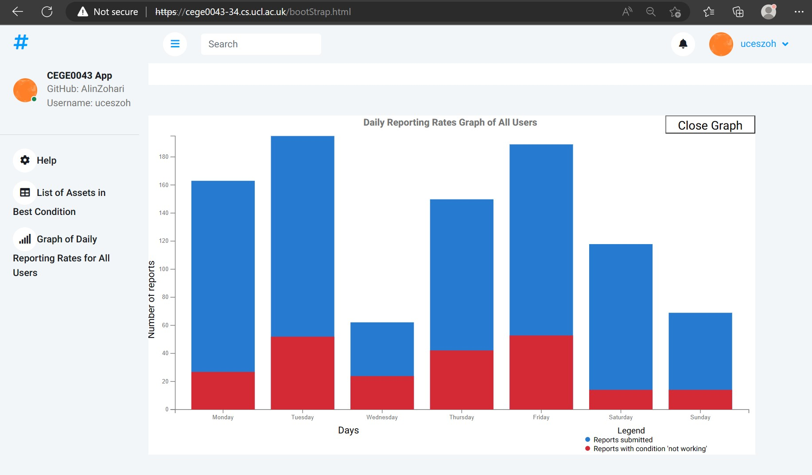Condition Report and Menus (small screen)
This mode will allow you to submit a condition assesment report for assets that you have created.
When you are in a small screen, the marker of assets you created will appear on the map automatically.
You can then click on one of the asset marker and A Condition Report Form will pop up.
Simply click on the condition you see fit from the six choices on the form.
You can submit a condition report to any asset you created whether the asset already had a condition report or not.
An alert will inform you whether the condition had changed or not from previous condition for that particular asset
Menus in this mode includes (left sidebar):
1) User Ranking
2) Closest Assets - Add Layer
3) Closest Assets - Remove Layer
4) Last 5 Reports - Add Layer
5) Last 5 Reports - Remove Layer
6) Not Rated: Last 3 days - Add Layer
7) Not Rated: Last 3 days - Remove Layer
Below are in details how to submit a condition report with its example screenshots.
Also includes are the Menus and its screenshots.
Step 1: Click on the Asset Marker
When you are in the small screen, the assets that you have created will automatically appear. The asset that are near to you would pop up its Asset Condition Report Form automatically based on the proximity distance from you with it. However, you can still click on any asset you have created which you want to enter its Condition Reports
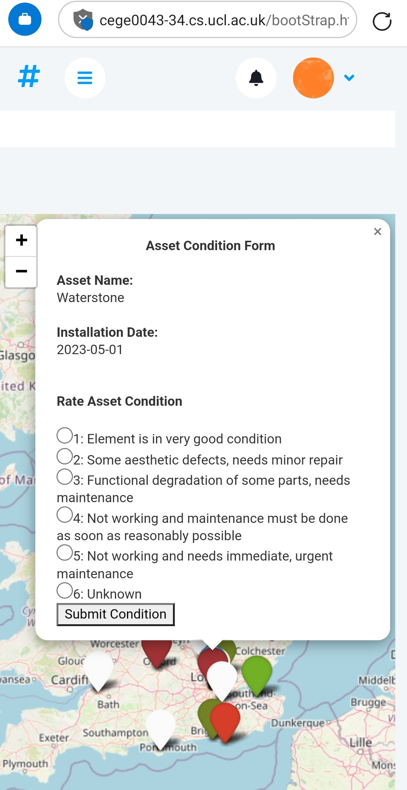Step 2: Click on the Condition in the Form
The Condition Assesment Form (as in the example screnshot above) will appear once you click on the asset.
The form include its Asset Name and Installation Date.
Below it is the Condition Assement which you can click on which you see deem to the asset.
The choices are as follows:
1- Element is in very good condition
2- Some aesthetic defects, needs minor repair
3- Functional degradation of some parts, needs maintenance
4- Not working and maintenance must be done as soon as reasonably possible
5- Not working and needs immediate, urgent maintenance
6- Unknown
Step 3: Submit the Form
You can now submit the Condition Report Form. An alert will inform you whether the condition had changed or not from previous condition for that particular asset. When the condition is succesfully submitted to the database a 'Thank you' alert would appear. Another alert will inform you on how many reports you have submitted so far. Your newly submitted condition report would automatically update on the map with its corresponding colour. (more on the colour and its correponding condition in Last 5 Reports Menu)
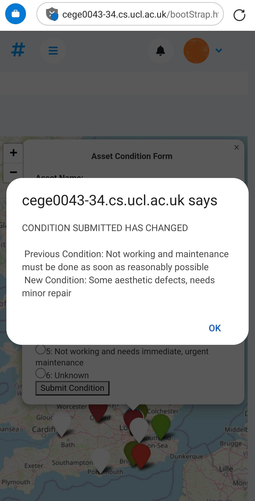 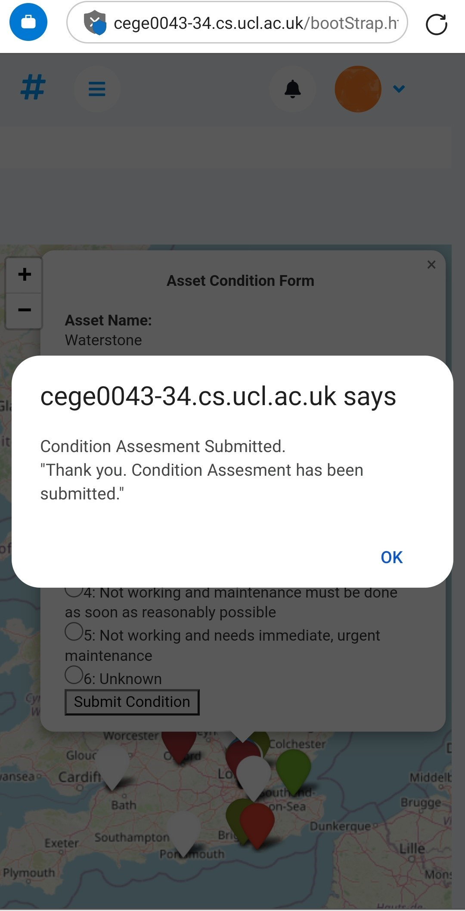 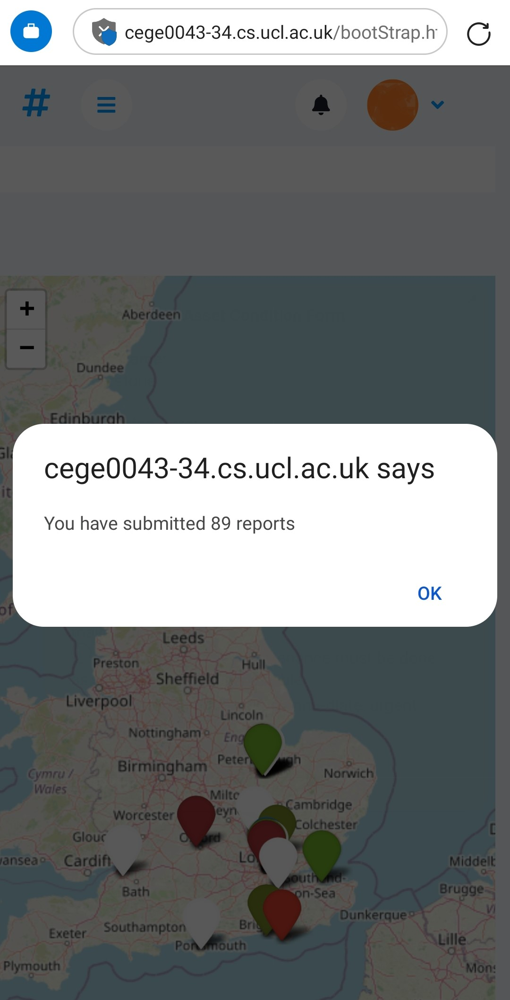Menus and Its Function (small screen)
User Ranking
This menu tells your ranking based on the number of condition reports you have created in comparison to all other users
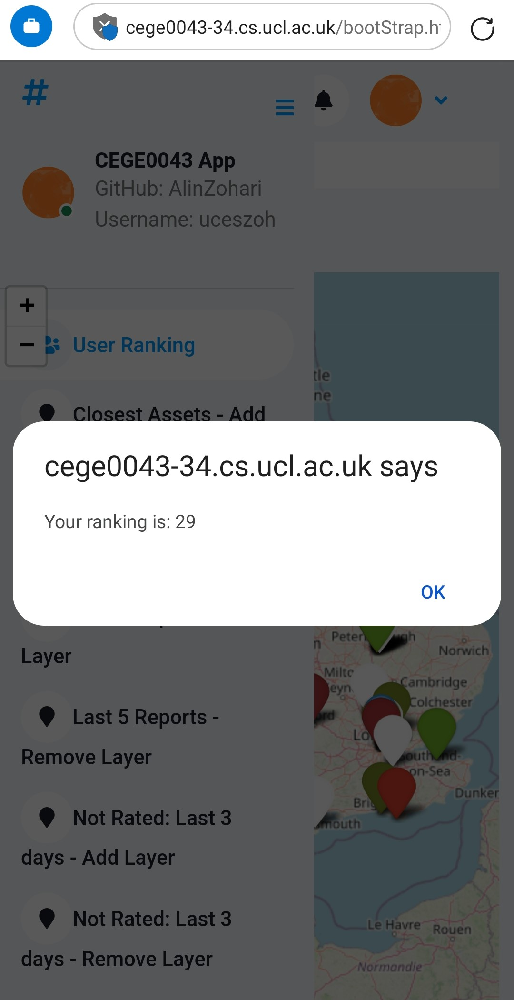Closest Asset (Add and Remove Layer)
This menu will project onto the map layer five assets that are closest to your current location, added by any user. You can add or remove the layer based on either the Add or Remove Layer menu. An alert will appear if the layer had already been loaded or they are no layer on the map to be remove.
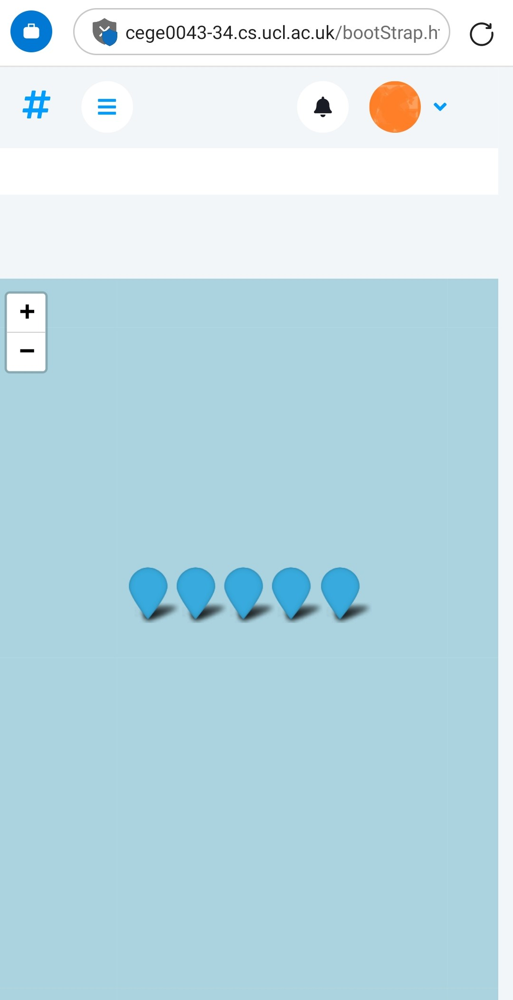 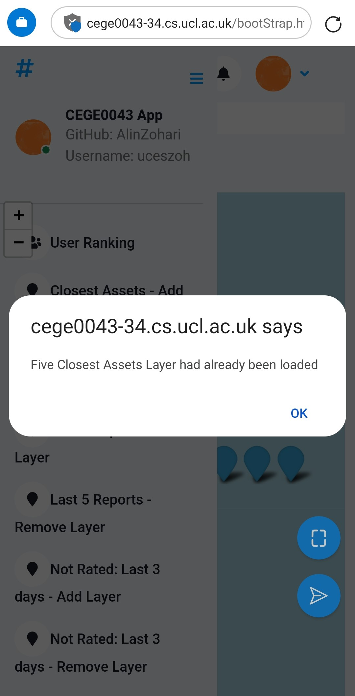 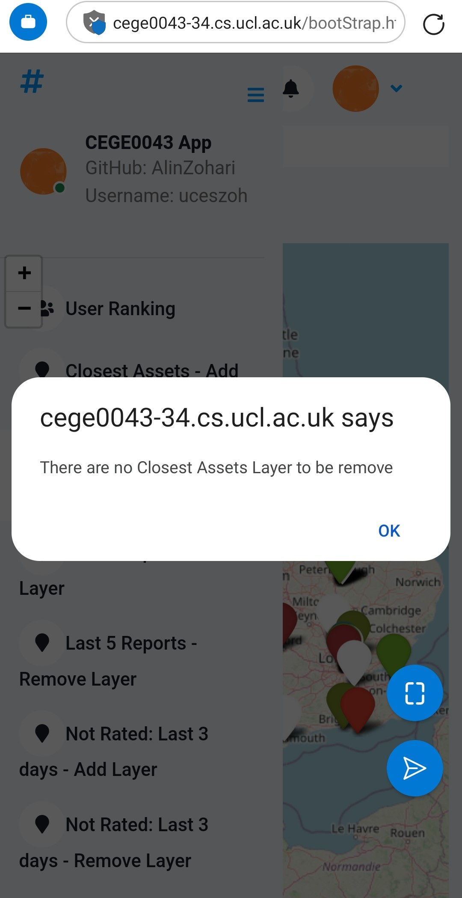Last 5 Reports (Add and Remove Layer)
This menu will project onto the map the last five reports that you have created with its colour coded.
The colour and description of the condition of the asset is as folows:
1-(Dark Green) Element is in very good condition
2-(Green) Some aesthetic defects, needs minor repair
3-(Orange) Functional degradation of some parts, needs maintenance
4-(Red) Not working and maintenance must be done as soon as reasonably possible
5-(Dark Red) Not working and needs immediate, urgent maintenance
6-(White) Unknown
You can add or remove the layer based on either the Add or Remove Layer menu.
An alert will appear if the layer had already been loaded or they are no layer on the map to be remove.
Not Rated: Last 3 days (Add and Remove Layer)
It shows the assets for which no condition reports exists in the last 3 days in a gray marker colour. You can add or remove the layer based on either the Add or Remove Layer menu. An alert will appear if the layer had already been loaded or they are no layer on the map to be remove.
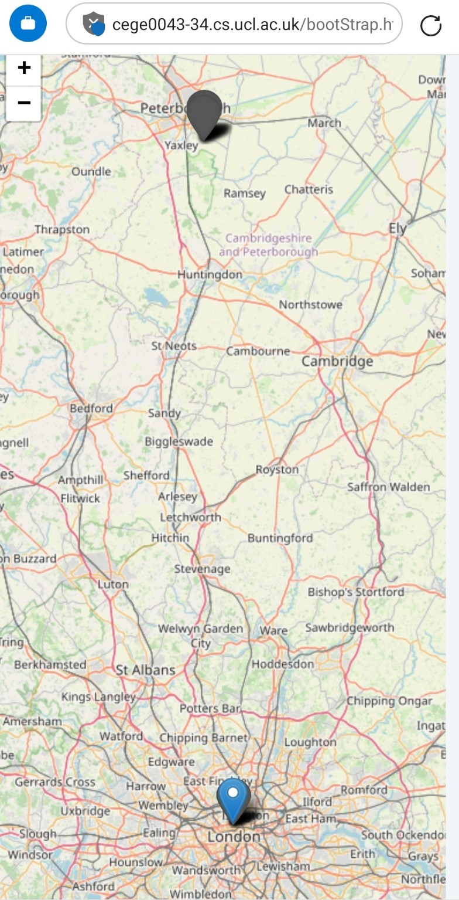 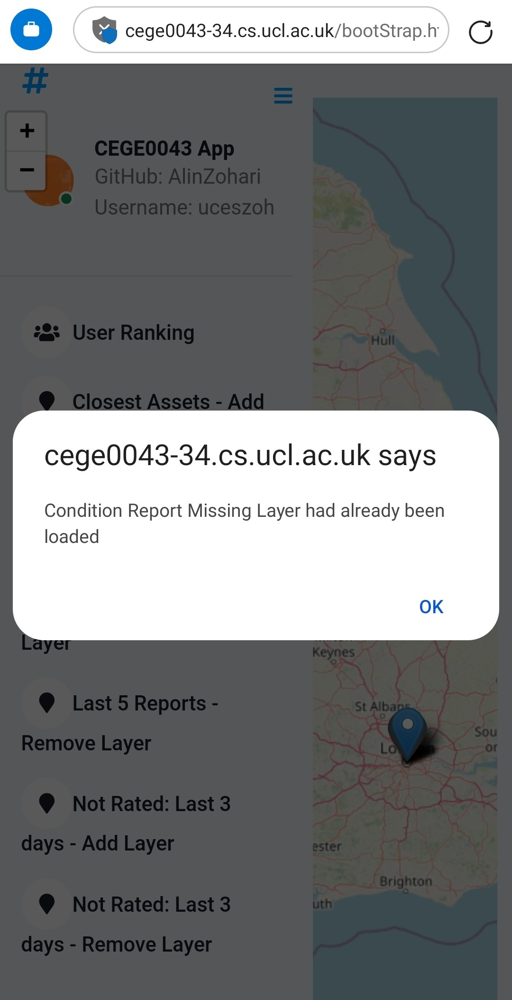 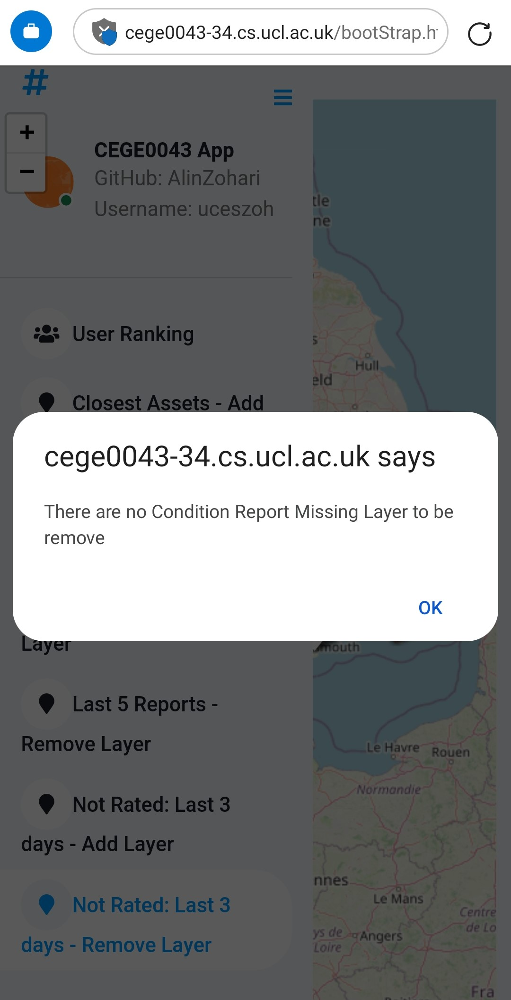